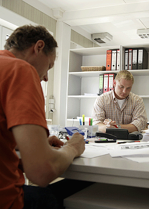

Die Büroarbeitsplätze im Unternehmen und auf der Baustelle sind so zu gestalten, dass sie den ergonomischen Anforderungen entsprechen. Dies beeinflusst auch die Arbeitsqualität und Arbeitsproduktivität. Kontrollieren Sie die Gefährdungen und Belastungen in folgenden Bereichen: